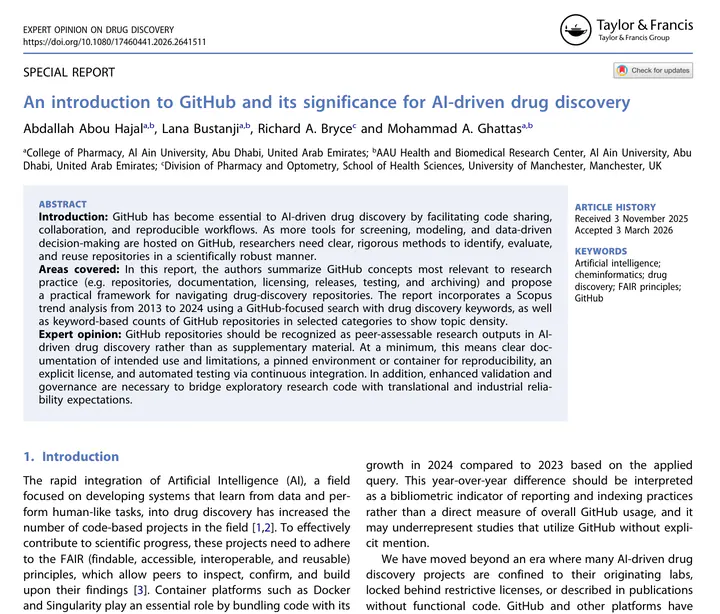
A Abou Hajal, L Bustanji, R A. Bryce, et al
Why open-source platforms like GitHub matter for reproducibility in computational drug discovery, with practical guidance for researchers new to version control.
Expert Opinion on Drug Discovery, 2026
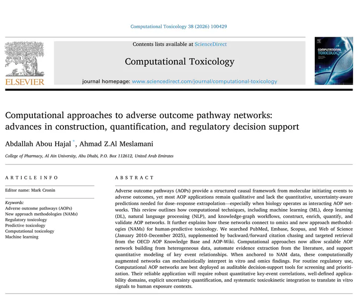
A Abou Hajal, A Z. Al Meslamani
Computational Toxicology, 2026
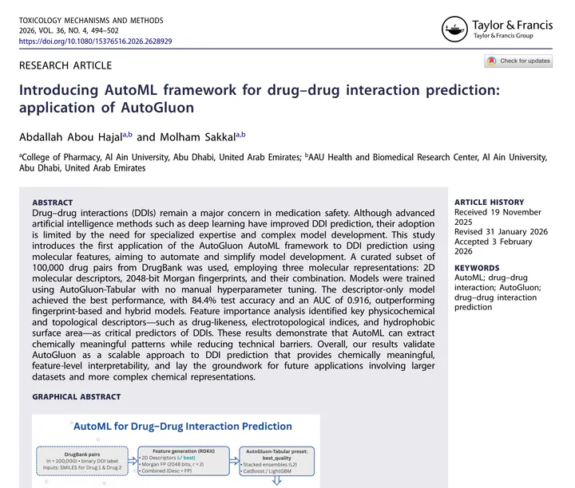
A Abou Hajal, M Sakkal
We use AutoGluon to predict drug–drug interactions, and show that automated model search with molecular fingerprints can match handcrafted pipelines while staying simple to reproduce.
Toxicology Mechanisms and Methods, 2026
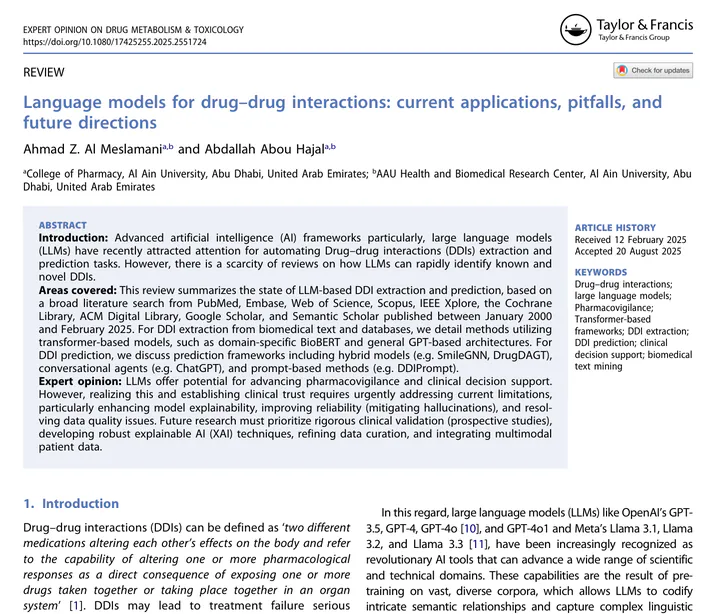
A Z. Al Meslamani, A Abou Hajal
Where large language models already help with drug-interaction prediction, where they still hallucinate, and what evaluation gaps need closing before regulators rely on them.
Expert Opinion on Drug Metabolism & Toxicology, 2025
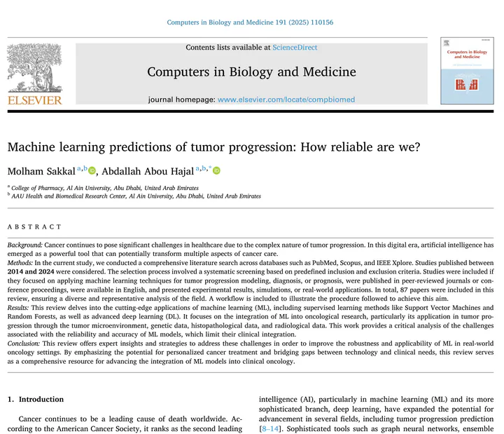
M Sakkal, A Abou Hajal
A methodological audit of tumour-progression ML papers, showing how weak validation choices inflate apparent performance. Also sketches what a more honest benchmark would look like.
Computers in Biology and Medicine, 2025
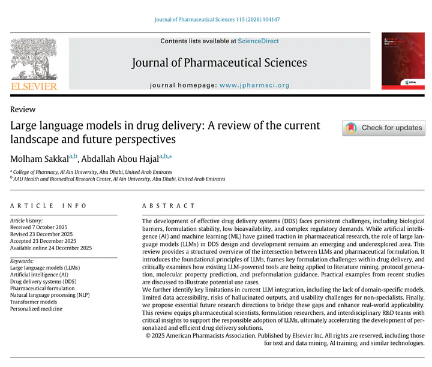
M Sakkal, A Abou Hajal
What LLMs (ChemCrow, BioBERT, and friends) currently do for formulation and drug-delivery design, and what would have to be true before they replace manual literature triage.
Journal of Pharmaceutical Sciences, 2025
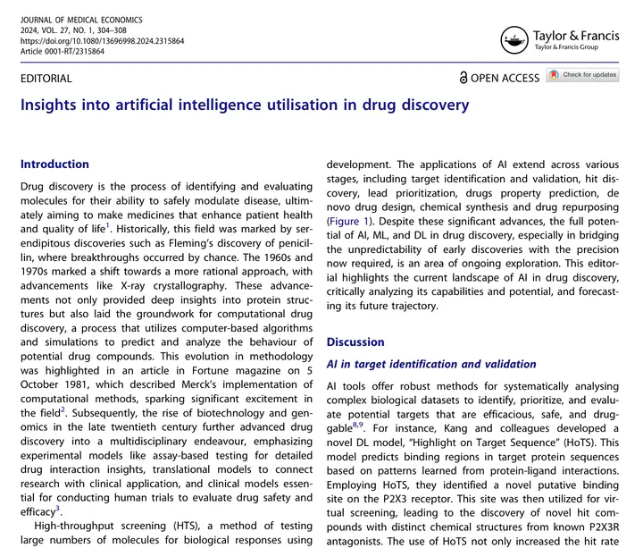
A Abou Hajal, A Z. Al Meslamani
A pragmatic overview of where AI is actually paying off in pharma R&D today, and the economic forces shaping where it gets adopted next.
Journal of Medical Economics, 2024
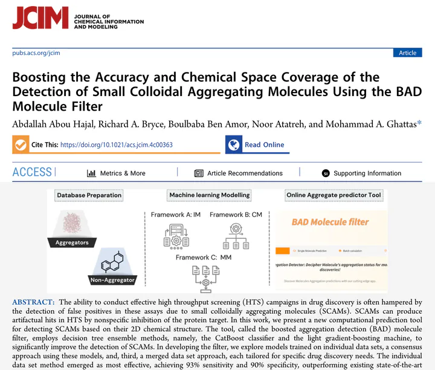
A Abou Hajal, R A. Bryce, B Ben Amor, et al
My MSc thesis. A machine-learning ensemble that flags molecules that look like real bioactive hits but are actually colloidal aggregators, deployed as a public web server so any group can pre-screen their compounds for free.
Journal of Chemical Information and Modeling, 2024
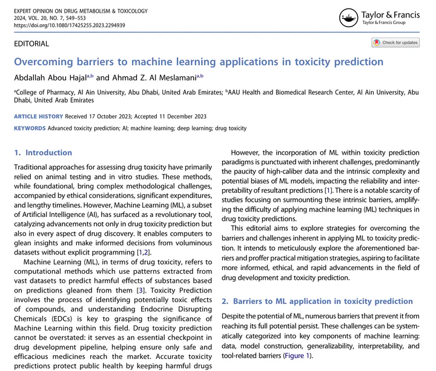
A Abou Hajal, A Z. Al Meslamani
The data, validation, and interpretability gaps that keep ML toxicity models from being adopted by regulators, with concrete suggestions for closing each.
Expert Opinion on Drug Metabolism & Toxicology, 2023
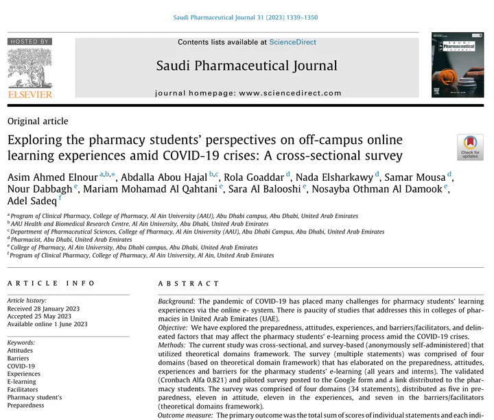
A Ahmed Elnour, A Abou Hajal, R Goaddar, et al
Survey of pharmacy students' experiences with remote learning during COVID-19. Reports what worked, what did not, and what should carry over.
Saudi Pharmaceutical Journal, 2023
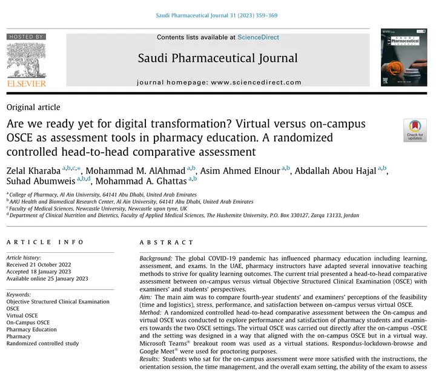
Z Kharaba, M M. AlAhmad, A Ahmed Elnour, et al
Head-to-head randomised trial comparing virtual and on-campus pharmacy OSCE exams during COVID-19. Performance was equivalent but examiner experience differed.
Saudi Pharmaceutical Journal, 2023
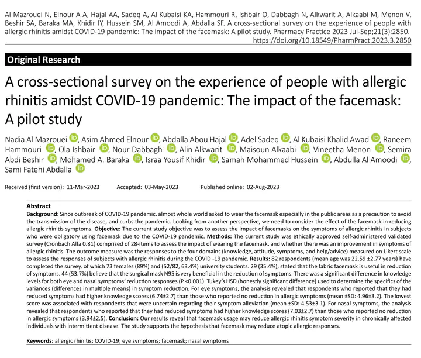
N Al Mazrouei, A Ahmed Elnour, A Abou Hajal, et al
Pharmacy Practice, 2023
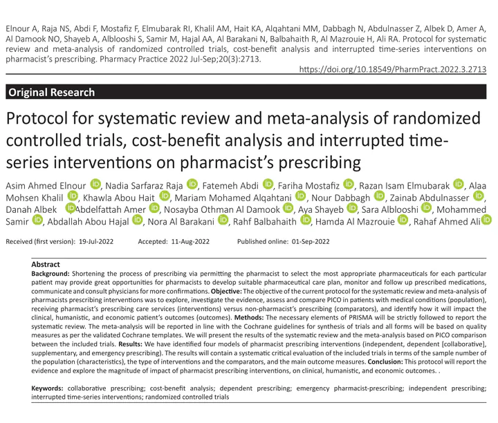
A Ahmed Elnour, N Sarfaraz Raja, F Abdi, et al
Pre-registered protocol for a systematic review of pharmacist-led prescribing interventions, locking inclusion criteria in before any data extraction.
Pharmacy Practice, 2022
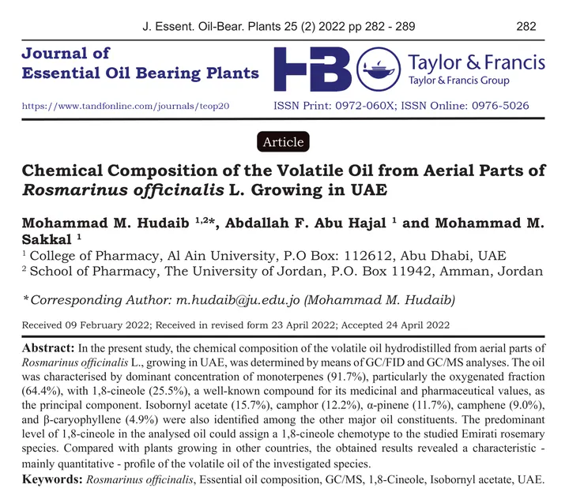
M Hudaib, A F. Abu Hajal, M M. Sakkal
GC-MS characterisation of UAE-grown rosemary essential oil, with major-constituent profile and a comparison to other regional sources.
Journal of Essential Oil Bearing Plants, 2022